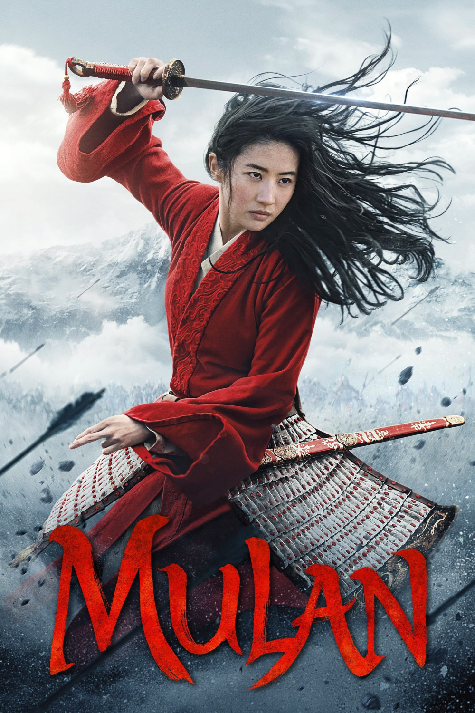

Мировая премьера: 4 сентября 2020
Слоган: Верная. Отважная. Честная.
Сюжет: Изданный императором Китая указ о призыве на службу в Имперской армии одного мужчины из каждой семьи для защиты страны от северных захватчиков вдохновляет Хуа Мулан, старшую дочь почётного воина, занять в войсках место своего больного отца. Маскируясь под мужчину, девушка подвергается испытаниям на каждом шагу, проявляя свои внутреннюю силу и истинный потенциал. Мулан ждёт эпичное путешествие, которое превратит её в доблестного воина, позволит заслужить уважение благодарного народа и стать гордостью отца.
Режиссёр: Ники Каро
В основе: Китайская народная баллада "Песнь о Мулань" (6 в.) и мультфильм "Мулан" (США, 1998)
В ролях:
| Ифэй Лю | Хуа Мулан |
| Донни Йен | Генерал Тун Юнь |
| Ци Ма | Хуа Чжоу |
| Джейсон Скотт Ли | Бори Хан |
| Йосон Ан | Хонхэй |
| Рон Юань | Сержант Цян |
| Джет Ли | Император |
| Гун Ли | Сяньян |
| Розалинд Чао | Хуа Ли |
| Нельсон Ли | Советник |
| Цзюнь Юй | Сверчок |
| Чжэн Пэй-Пэй | Сваха |
| Джимми Вонг | Линь |
| Чэнь Тан | Яо |
| Доа Моа | По |
| Минг-На Вен | Почётная гостья |
Бюджет: $ 200 млн.
Кассовые сборы в мире: $ 70 млн.
Продолжительность: 1 ч. 45 мин.
Рейтинг: 5.8